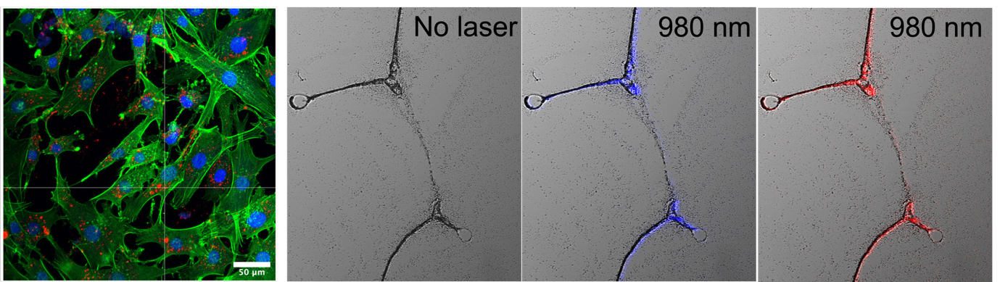
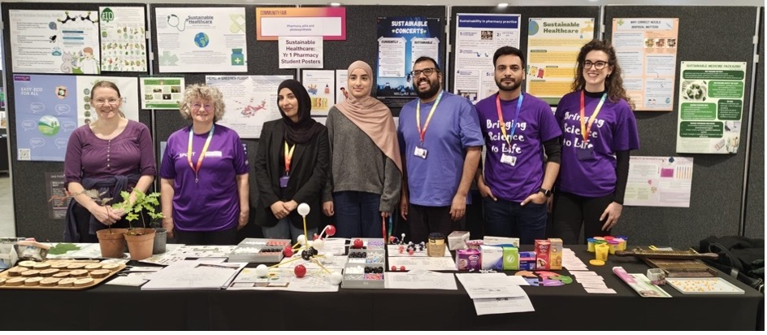
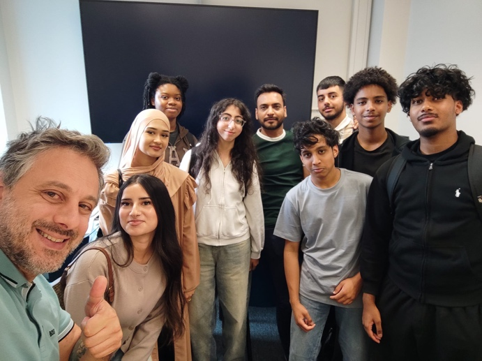

Sci-Art
Science, Seen Differently
Scientific imagery from our lab, where research meets art, curiosity and visual storytelling.

Taking our science beyond the laboratory
We share our research through creative, accessible and interactive activities that connect science with people, communities and wider society.
We took part in the Universally Manchester Festival, bringing science to life for the public through hands on demonstrations and activities.

We recently co-hosted the In2STEM 2026 Summer School programme, led by Dr Christos Tapeinos, welcoming Year 12 students from under represented backgrounds.
